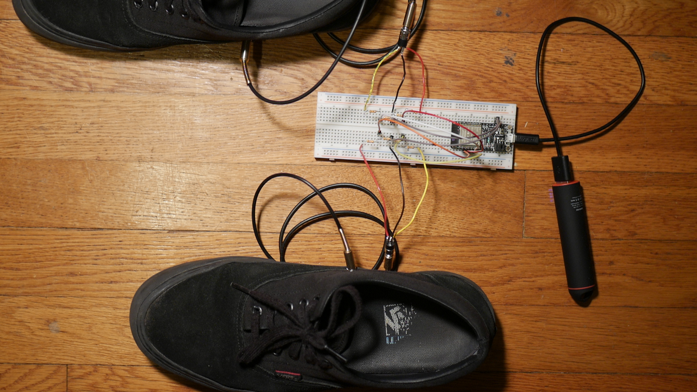

Final Project
Original Project Ideas
At the beginning of the semester, I had a few ideas for a final concluding project.
My first idea was to build an immersive audio and video capture dummy head with microphone elements in a binaural pair in realistic ears, and stereoscopic widefield eyesite in order to attempt to satisfyingly capture and record live audience-participatory theater, specifically original performance Shakespeare.
My second thought was to try to create a shirt that could sense prop sword hits and respond by playing back annimations of blood on some sort of fabric screen.
My third idea was to build shoes with midi triggers in the toe and heel which could control an analog or digital drum machine while allowing the user to simultaneouly play another instrument.
It is this final idea which has propelled me through this semester.
The Sensor
In order to detect the contact of shoe with floor, I thought about a series of different sensors, from handmade pressure sensors to accelerometers to vibrator sensors. I have now settled on velostat, a rubber-like cloth material which changes its capacitance with the application of pressure. I'm particularly attracted to velostat because it is extrordinarily thin compared to an accelerometer, and reliable compared to a piezo crystal.
However, after constructing my first pair of shoes, the velostat quickly began wearing out. After 5-10 minutes of testing, each sensor began to send increasingly inconsistent values and eventually began to return only the maximum output.
I hope that this is an error on my part. After quick research online, other makers who have used velostat as a pressure sensor have not reported durability issues. I wonder if the process of soldering wire to the copper tape attached to each sensor may have done damage to the fabric.
For now, I have used piezos for my prototype.

Connectivity
In order to make the shoes as flexible as possible, I wanted to make them connect to both my laptop as a MIDI device and to output a 5 pin MIDI signal which could be plugged in to most hardware drum machines. My main concerns when deciding how to connect the shoe-housed sensors to that drum hardware was the form factor within the shoes, trying to keep hardware as minimal as possible, and trying to keep latency similarly as low as possible.
Housing
I decided to use the Adafruit Feather ESP32 to convert the analog signal from the sensors in the shoes into digital MIDI signals because of its diverse connectivity options. It's a relativly large controller, so mounting it within the shoes was not a good option. I wanted to keep the weight and size down in each shoe as much as possible. I decided to build a small housing for the controller and the output devices. Since for this first version, I intend to play while sitting down and playing other instruments, I imagined that the housing could sit under my chair, connected to the shoes be reinforced stereo 1/8th inch cables.
Since I don't have a 3D printer at home, and the housing isn't essential for prototyping the project, I've ended up using a playing card box for the housing, but I've included here an image from my Fusion 360 model of a potential future housing


The housing includes an elevated mount for the solderable breadboard I am using to mount my controller as well as holes for the 1/8th inch cable sockets, 5 pin midi out, and a small cable socket I designed for a removeable USB cable. The small circle will lock the USB cable in by being closed and slipped into the matching port on the side of the box.
The lid contains my initials and "tapeur de pied," a Quebicois name for, literally, a "tapper of the feet," or all musicians who use their feet as percussion, often while fiddling. The STL file can be downloaded or modified on Thingiverse.
Components
Here is a list of the components I used to assemble my shoes.
Adafruit Feather ESP 32
Solderable Breadboard

3.5mm Stereo Panel Jacks
3.5mm Stereo Auxillary Cables

Velostat Sheet

5 Pin MIDI Panel Socket
As well as adhesive copper tape, solidcore wire, and a lot of solder.

Here is how everything is connected!
Code
I'm deeply greatful to Amanda Ghassaei for her Instructable describing how to send MIDI With "Arduino," which was invaluable as I learned how to work with MIDI information, and to Ryo Kosaka's ""Open E-Drums" project, which helped me quickly transition to using piezos in order to assemble my prototype. The following code relies heavily on his work.
#include
#include
#include
#include
int HEEL[6] = {
150, //threshold
4000, //sensitivity
38, //note
3, //flag
0, //velocity
0 //last peakValue
};
boolean heelFlag = false;
int TOE [6] = {
150, //threshold
4000, //sensitivity
37, //note
3, //flag
0, //velocity
0 //last peakValue
};
boolean toeFlag = false;
BLECharacteristic *pCharacteristic;
bool deviceConnected = false;
#define MIDI_SERVICE_UUID "03b80e5a-ede8-4b33-a751-6ce34ec4c700"
#define MIDI_CHARACTERISTIC_UUID "7772e5db-3868-4112-a1a9-f2669d106bf3"
uint8_t midiPacket[] = {
0x80, // header
0x80, // timestamp
0x00, // status
0x3c, // 0x3c == 60 == middle c == note
0x00 // velocity
};
class MyServerCallbacks: public BLEServerCallbacks {
void onConnect(BLEServer* pServer) {
deviceConnected = true;
};
void onDisconnect(BLEServer* pServer) {
deviceConnected = false;
}
};
void setup() {
Serial.begin(115200);
BLEDevice::init("iTap");
// Create the BLE Server
BLEServer *pServer = BLEDevice::createServer();
pServer->setCallbacks(new MyServerCallbacks());
BLEDevice::setEncryptionLevel((esp_ble_sec_act_t)ESP_LE_AUTH_REQ_SC_BOND);
// Create the BLE Service
BLEService *pService = pServer->createService(BLEUUID(MIDI_SERVICE_UUID));
// Create a BLE Characteristic
pCharacteristic = pService->createCharacteristic(
BLEUUID(MIDI_CHARACTERISTIC_UUID),
BLECharacteristic::PROPERTY_READ |
BLECharacteristic::PROPERTY_NOTIFY |
BLECharacteristic::PROPERTY_WRITE_NR
);
pCharacteristic->setAccessPermissions(ESP_GATT_PERM_READ_ENCRYPTED | ESP_GATT_PERM_WRITE_ENCRYPTED);
// https://www.bluetooth.com/specifications/gatt/viewer?attributeXmlFile=org.bluetooth.descriptor.gatt.client_characteristic_configuration.xml
// Create a BLE Descriptor
pCharacteristic->addDescriptor(new BLE2902());
// Start the service
pService->start();
// Start advertising
BLESecurity *pSecurity = new BLESecurity();
pSecurity->setAuthenticationMode(ESP_LE_AUTH_REQ_SC_BOND);
pSecurity->setCapability(ESP_IO_CAP_NONE);
pSecurity->setInitEncryptionKey(ESP_BLE_ENC_KEY_MASK | ESP_BLE_ID_KEY_MASK);
pServer->getAdvertising()->addServiceUUID(MIDI_SERVICE_UUID);
pServer->getAdvertising()->start();
}
void loop() {
if (deviceConnected) {
int heelValue = analogRead(33);
if (heelValue > HEEL[0] && heelFlag == false) {
for (int i = 0; i < 4; i++) {
int peak = analogRead(33);
delay(1);
if (peak > HEEL[4]) {
HEEL[4] = peak;
}
}
HEEL[5] = HEEL[4];
HEEL[4] = map(HEEL[4], HEEL[0], HEEL[1], 0, 127);
if (HEEL[4] <= 1) {
HEEL[4] = 1;
}
if (HEEL[4] > 127) {
HEEL[4] = 127;
}
//Sensing Done
// noteOn
midiPacket[2] = 0x90; // note down, channel 0
midiPacket[3] = HEEL[2]; //snare note is 38
midiPacket[4] = HEEL[4]; // velocity
pCharacteristic->setValue(midiPacket, 5); // packet, length in bytes
pCharacteristic->notify();
// noteOff
midiPacket[2] = 0x80; // note up, channel 0
midiPacket[3] = HEEL[2]; //snare note is 38
midiPacket[4] = 0; // velocity
pCharacteristic->setValue(midiPacket, 5); // packet, length in bytes)
pCharacteristic->notify();
heelFlag = true;
}
//Canceling Retrigger
if (heelValue < (HEEL[5] * (0.01 * HEEL[3])) && heelFlag == true) {
delay(3); //mask time
int sensorValue0 = analogRead(33);
if (sensorValue0 < (HEEL[5] * (0.01 * HEEL[3]))) {
heelFlag = false;
}
}
int toeValue = analogRead(32);
if (toeValue > TOE[0] && toeFlag == false) {
for (int i = 0; i < 4; i++) {
int toePeak = analogRead(32);
delay(1);
if (toePeak > TOE[4]) {
TOE[4] = toePeak;
}
}
TOE[5] = TOE[4];
TOE[4] = map(TOE[4], TOE[0], TOE[1], 0, 127);
if (TOE[4] <= 1) {
TOE[4] = 1;
}
if (TOE[4] > 127) {
TOE[4] = 127;
}
//Sensing Done
// noteOn
midiPacket[2] = 0x90; // note down, channel 0
midiPacket[3] = TOE[2]; //snare note is 38
midiPacket[4] = TOE[4]; // velocity
pCharacteristic->setValue(midiPacket, 5); // packet, length in bytes
pCharacteristic->notify();
// noteOff
midiPacket[2] = 0x80; // note up, channel 0
midiPacket[3] = TOE[2]; //snare note is 38
midiPacket[4] = 0; // velocity
pCharacteristic->setValue(midiPacket, 5); // packet, length in bytes)
pCharacteristic->notify();
toeFlag = true;
}
//Canceling Retrigger
if (toeValue < (TOE[5] * (0.01 * TOE[3])) && toeFlag == true) {
delay(3); //mask time
int sensorValue1 = analogRead(32);
if (sensorValue1 < (TOE[5] * (0.01 * TOE[3]))) {
toeFlag = false;
}
}
}
}
Having never worked with code before, I found troubleshooting to be an challenging process, and I look forward to learning how to make this code more efficient in the future.
MIDI
Connecting the BLE MIDI device to my Mac Book is a relativly simple process. Within the MIDI Studio function of Apple's Audio MIDI Setup manager, I used the Bluetooth Configuration menu to select the device, then, in the preferences menu of my DAW, selected the device as my MIDI input. I was then able to trigger any of my drum samples with the shoes!
Going Forward
As I continue to work on these shoes, I hope to first continue to test velostat sensors, and then to find ways to make the velocity output of the shoes more consistent. I also look forward to improving my code, making it more efficient and documented.